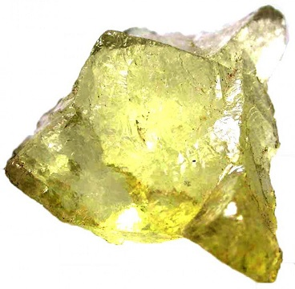

| Product | About |
|---|---|
|  Rock 1 |
Rock 1 is our closest mineral to earth. It takes only about a week to form naturally in its natural habitat. Inexpensive, but looks pretty. |
| Rock 2 |
See the rainbow, touch the rainbow! Rock 2 can be used to freeze things quickly if put into a freezer with food. Can you say "reverse microwave?" |
 Rock 3 |
From neon signs to glow-in-the-dark paint, Rock 3 can shine for up to 5 days after 5 minutes in the oven. And when the glow goes out, it can be rekindled through re-applying the heat. |